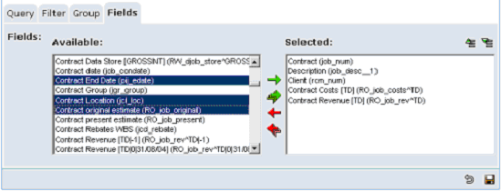

To define a new report using Report Writer:
- Go to Report Writer and click
 [Add] to add a new report.
[Add] to add a new report. - Give the report a name, and a description. The name identifies the report in, among other places, the Report Status screen.
- Click to choose a query to base the report on. A query is a pre-defined section of Progress 4GL code that selects the records that the report will include.
NOTE
Queries are filtered by table security; you will only see queries for which you have access to all the tables.
- Choose whether to show grand totals at the end of the report. (This will show totals for the fields you mark as being totalled.)
- Select one of the pre-defined page layouts. The page layout defines the size of the report page, its orientation (landscape or portrait), and margins.
- Select one of the pre-defined classes for the report. The report class defines the font, size and formatting of the body text of the report, and of the headers, footers and totals.
If a graph is required on the report then select the graph type to be included on report.
If you want to report on a selected number of records then you can enter a number in the Maximum Rows field to limit the number of rows on the report. (Eg:- useful if you want to report on the Top 5).
- On the Filter tab, select the fields you want to evaluate to decide whether to include the record on the report. For example, to include only
- On the Group tab, choose how you want the report to be grouped, sorted and totalled. You can choose to have a header line before each group (that shows the value of the Group By field), and a footer line after each group (that shows the totals for any fields you mark as being totalled). See Report Writer - Grouping Report Data.
- Click
 to save the report at this point.
to save the report at this point. - On the Fields tab, select the fields to include on the report.
- To select a single field, double-click the field in the Available box. (You can also double-click a field in the Selected box to remove it.)
- To select several fields at the same time, hold down the Ctrl key and click the fields. Click
 [Add] to move the fields into the Selected: box.
[Add] to move the fields into the Selected: box.

- To change the order the fields will appear on the report, select a field or fields in the Selected: box and use the
 [Move Up] and
[Move Up] and  [Move Down] buttons to move them up or down.
[Move Down] buttons to move them up or down.
You can change the column labels and widths, and specify whether you want the columns totalled, when you modify the report later; see Report Writer - Modifying Fields.
- Save the report.